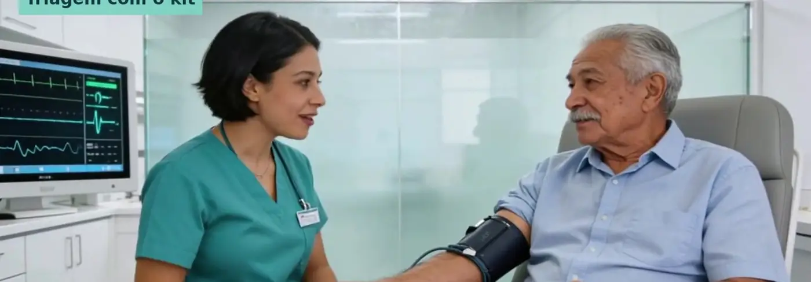

Soluções / Unidade móvel
O cuidado chega até onde a estrada termina.
Um caminhão 4x4 com triagem e duas cabines de teleconsulta leva médico especialista a cidades distantes — e o acompanhamento continua depois, com a pulseira.
A unidade móvel em ação.
Atendimento organizado, do agendamento à pulseira.
Visita agendada
A data é marcada com a prefeitura e os agentes de saúde; a vaga na praça já fica reservada.
Fila com senha
Cada pessoa já tem sua senha; o painel externo mostra só o número e o destino, nunca nomes.
Triagem e consulta
Pressão, oxigênio, temperatura e glicemia medidos com o kit; duas cabines atendem ao mesmo tempo.
Pulseira e receita
O paciente sai com a receita e a pulseira, e o médico acompanha de longe, todos os dias.
Como é a unidade.
- Acesso para todos — Escada com corrimão e plataforma elevatória para cadeira de rodas.
- Toldo e espera — Toldo lateral cria a área de espera na sombra.
- Duas cabines — Separadas por vidro, cada uma com tela para o médico por vídeo.
- Privacidade — Painel de senhas sem nomes e vidro fosco na altura do rosto.
- Fora da estrada — Caminhão 4x4 para estradas de terra e longas distâncias.
- Continuidade — Depois que o caminhão parte, a pulseira continua enviando os sinais.


Para quem precisa chegar longe.
Governos e secretarias de saúde
Especialistas em regiões sem hospital próximo.
Planos de saúde
Cobertura real para beneficiários do interior.
Comunidades rurais
Consulta, receita e acompanhamento sem viajar horas.
Primeiro cenário: o Chaco paraguaio, onde o hospital mais próximo pode estar a horas de estrada.
Tudo ligado ao mesmo histórico.

Paciente e família
App, lembretes de remédio e resumo de emergência no bolso.
Saiba mais →
Hospital e clínica
Sinais vitais direto no sistema e a família informada.
Saiba mais →
Farmácia
Receita, dispensação e adesão ao tratamento no mesmo histórico.
Saiba mais →
Home care
O cuidado continua em casa depois da alta.
Saiba mais →
Célula de atendimento
Sala de 9 m² com triagem e teleconsulta, onde as pessoas estão.
Saiba mais →